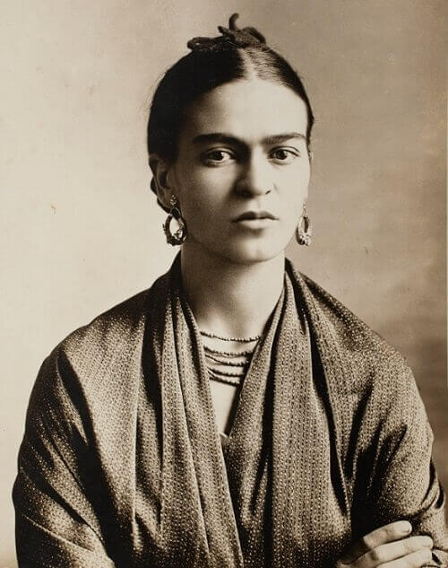

"Feet, what do I need you for when I have wings to fly?"

A Rare Intimate Photo of Frida Kahlo
Here's Frida Kahlo's Biography, Quotes, and Facts
Frida Kahlo, full name Magdalena Carmen Frieda Kahlo y Calderón (born
July 6, 1907, Coyoacán, Mexico—died July 13, 1954, Coyoacán), Mexican
painter best known for her uncompromising and vividly colored
self-portraits that deal with subjects such as identity, the human body,
and death. Despite her denial, she is frequently recognized as a
Surrealist. Aside from her art, Kahlo was well-known for her turbulent
relationship with muralist Diego Rivera (married 1929, divorced 1939,
remarried 1940).
Kahlo was born in Mexico City to a German father of Hungarian ancestry
and a Mexican mother of Spanish and Native American ancestry. Throughout
her creative career, Kahlo usually depicted her ancestors as binary
opposites: the colonial European side and the indigenous Mexican side.
She had polio as a youngster, which left her with a minor limp, a
chronic disease she would have to live with for the rest of her life.
Her father, a skilled photographer, was especially close to Kahlo, and
she regularly accompanied him in his studio, where she developed a keen
eye for detail. Although she attended some sketching lessons, Kahlo was
primarily interested in science, and in 1922 she enrolled in Mexico
City's National Preparatory School with the intention of eventually
studying medicine. She met Rivera when she was there, who was working on
a mural for the school's auditorium.
Here are some of Frida Kahlo's quotations to encourage you to keep going and convert your anguish
into grace and beauty:
"I paint flowers so they will not die."
They thought I was a Surrealist, but I wasn't. I never painted dreams.
I painted my own reality."
"At the end of the day, we can endure much more than we think we can."
If you have the time, you should read more about this exceptional artist on
her
Wikipedia Entry.